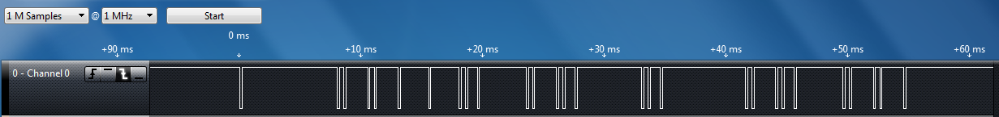

Lab 3 - IR Remote Control Texting Over a UART Link
Warning: This is a hard lab, which is why it's also the longest. We would highly recommend working on this outside of scheduled lab hours in order to finish this one on time, and emphasize that you need to read the relevant documentation and datasheets mentioned in this lab manual, as you will not be able to complete this lab without a thorough understanding of them.
Overview
In this lab, you will use the Saleae logic analyzer and an IR receiver module to characterize the transmissions for buttons from an AT&T IR universal remote control for a specific TV.
Each group will be assigned a specific data format to decode that is associated with a unique TV code. You will then connect the CC3200 Launchpad to the IR receiver module and write a program that uses interrupts to monitor the signal from it. By analyzing the series of pulses, your program will be able to determine which button was pressed on the IR remote control. You will then use your IR remote control to compose text messages using the multi-tap text entry system and send text messages back and forth between two CC3200 LaunchPad boards via UART channel.
This lab assignment is alotted 6 sections (3 weeks) and verification is due by the end of your last lab section of week 6.
Learning Objectives
At the end of this lab, students should be able to:
- Explain and Implement GPIO-based interrupts
- Understand and Construct the IR receiver circuit
- Implement digital signal decoding in software
- Configure UART communication between 2 CC3200 boards
Requirements and Dependencies
Hardware Requirements
- 2 AT&T S10-S3 Remotes
- 2 100Ω resistor
- 2 100μF capacitor
- 2 Vishay TSOP311xx/313xx/315xx or TSOP381xx/383xx/385xx
Lab Datasheets
Refer to the following technical documents, which should be posted on the course website:
- CC3200 Technical Reference Manual
- CC3200 LaunchPad User Guide
- CC3200 LaunchPad Schematic
- CC3200 Datasheet
- IR Receiver Modules for Remote Control Systems
- Data Formats for IR Remote Control
- AT&T IR Universal TV Remote User Guide
Prelab - Interrupts, Systick, and the IR Receiver Circuit
Interrupts are a foundational concept for programming embedded systems. As has been discussed in class, interrupts are extremely useful for managing I/O in an efficient and timely manner.
In this lab, you will need to use GPIO interrupts, as well as the SysTick module to decode the TV remote signal. Hence, you should use the prelab to focus on understanding how interrupts work, how interrupt handlers should be written, concurrency and common concurrency bugs, as well as the SysTick module. For understanding the IR receiver module, you should refer to the application circuit in its datasheet.
Though we include a primer, you will need to go deeper in order to understand the topics on the prelab.
Prelab Objectives
Students should be able to at minimum:
- recall how a GPIO interrupt can be triggered and what occurs in the firmware when that happens
- understand the function and applications of the
volatileC keyword - understand the Cortex-M SysTick peripheral
- recall the role of the resistor and capacitor in IR receiver connection circuit
ideally:
- identify firmware bugs common in implementing interrupt handlers
- debug the IR receiver/MCU system
Interrupts
As already covered in class, interrupts allow a microcontroller to quickly respond to events without needing to poll the corresponding resource. An interrupt can be thought of as a specific hardware signal that is directly connected to the processor and associated with a particular resource. When signal changes, the processor knows that an event has occured for the corresponding resource, and will react to it by halting its current process and calling a special, designated function called an interrupt handler (a.k.a. Interrupt Service Routine or ISR). Designating a function as a given peripheral's interrupt handler is usually done in source code and is often facilitated by defining the handler, then passing it to the peripheral's initialization routine. Specific interfaces can vary.
It is important to note that interrupts are called asynchronously, so firmware that makes use of interrupt handlers are considered concurrent. Concurrency, at a high level, is the idea that multiple programs can be executed in a manner that looks simultaneous, but may actually have interleaved semantics. Because of this, you cannot make assumptions about the state of global variables if those variables are accessed in multiple contexts.
Here some useful resources that give more insight onto how interrupts work in general:
- Intro to Microcontrollers - Interrupts
- Intro to Microcontrollers - More on Interrupts
- Embedded.fm Podcast - Ep. 224 Interrupts to Interrupt Interrupts
- Embedded.fm Blog - ESE101 #23-25
SysTick Module
The SysTick peripheral module is a system peripheral of Cortex-M processors. It is essentially comprised of a counter register that is tied to the system clock, as well as a few status and configuration registers that hold the counter's reset value among other things.
Prelab Checkoff Task
The prelab is a set of 6 questions designed to prepare you concpetually for the lab. The assignment is graded on completion and expected to take no more than an hour at most to finish.
Please bring a completed copy of the Lab 3 Prelab Assignment (posted on Canvas) and show your TA at the beginning of lab for verification.
Part I: IR Receiver and Remote Setup
IR Receiver Module Setup
The figure below shows the connection schematic for the IR module.
The module has three pins:
- power (Vs)
- ground (GND)
- output signal (OUT)
NOTE: Different IR modules have different pinouts!! Double check which IR module you have before making connections.
The resistor and capacitor R1 and C1 are meant to filter noise that might occur on the power source and to protect against electrical over-stress (EOS) from power supply variations. Vs can be set to +3.3V and you can use R1 = ~100Ω and C1 = ~100μF. Because the IR receiver draws very little current, you can power it directly from your processor board.
Before connecting the IR receiver to your processor, you should wire it up and connect the OUT signal to an oscilloscope or the Saleae logic probe (See Part 2). You will first collect waveform data with the Saleae module, before you interface the device to your Launchpad. When you do interface the IR receiver to your processor, you will connect the OUT signal to an available GPIO input signal.
You should read through the TSOP31336 IR Receiver Module datasheet to understand how the module works. As shown in the Block Diagram of the datasheet, the IR receiver has a band-pass filter, which has a center frequency of 36 kHz.
Note 1: The TSOP31336 is able to suppress most of the interference from fluorescent lights. By using an oscilloscope, you can check if there are any spurious pulses on the OUT pin due to the fluorescent lights when there is no input signal from the remote. The lights in lab typically do not generate noise on the device, but outside of lab you may need to shield your receiver from the lights.
Note 2: When in the lab around other groups, you may need to shield your receiver from other groups’ IR remotes.
TV Remote Configuration
Your remote may have been previously configured so you should first reset the remote to factory defaults as follows:
Press and hold the AT&T key along with the OK key. Hold both keys for one second, then release. All the mode keys should flash twice.
Enter 900 using the numeric keypad. The AT&T key will give a long flash to confirm success.
If the remote control times-out before you complete the procedure, you will need to start over.
By default, the backlight is set to ON. You should disable backlighting to extend battery life. To toggle the backlight setting from ON to OFF (or vice versa), use the following steps.
Press and hold the AT&T key along with the OK key. Hold both keys for one second, then release. All the mode keys should flash twice.
Enter 991 using the numeric keypad. The AT&T key will give a long flash to confirm success.
You will program a Device code for a specific TV, as assigned by your TA. A TV Device code is a 4-digit number that must start with “1”. The IR transmission encoding for a specific TV varies by manufacturer and TV model so there are different Device codes for different TVs.
Press and hold the TV key along with the OK key. Hold both keys for one second, then release. All the mode keys should flash twice to indicate that you are in the programming mode.
Enter the 4-digit Device Code using the numeric keypad.
The TV key will give a long flash to confirm success.
Next you will configure the remote so that Channel and Volume commands always control one device, namely, the TV that you just specified. For channel control using the numeric keypad to be sent to your TV , perform the following steps:
Press and hold the AT&T key along with the OK key. Hold both keys for one second, then release. All the mode keys should flash twice.
Enter 966 using the numeric keypad. The AT&T key will flash twice to confirm success.
Press the TV key. The TV key will give a long flash to confirm success.
For volume control commands to be sent to your TV, also perform the following steps:
Press and hold the AT&T key along with the OK key. Hold both keys for one second, then release. All the mode keys should flash twice.
Enter 955 using the numeric keypad. The AT&T key will flash twice to confirm success.
Press the TV key. The TV key will give a long flash to confirm success.
Part II: Capturing and Characterizing IR Transmissions
In this part, you will use the Saleae logic analyzer to capture and characterize the IR transmission format and timing for the remote control numeric buttons 0 through 9, the ‘DELETE’ button, and the ‘ENTER’ button.
Note: For some TV codes, the ‘ENTER’ button may not be used, in which case use the ‘MUTE’ button.
Each button on the remote is encoded with a different pattern of
varying length pulses. See the document Data Formats for IR Remote
Control posted on Canvas under
Files -> Datasheets -> tv-remote-data-formats.pdf for
background on IR remote control transmission data formats and
timing.
Things to watch out for when setting up the logic analyzer:
When plugging the wire harness into the logic analyzer pod, notice that the orientation is shown on the bottom of the pod. Make sure that the ground symbol on the bottom of the Saleae module is aligned with the grey wire. Black is data Channel 0, Brown is Channel 1 and so on (the colors follow the color code for resistor values). (This only applies to the analyzers with a single-strip wire harness)
Our IR remote has a modulation carrier frequency of 36 kHz so a logic analyzer sampling frequency that is significantly above that (say 500 kHz) will yield accurate timing measurements. For example, you can set the sampling options to: 1 M Samples @ 500 KHz to capture 2 seconds of data or 1 M Samples @ 1 MHz to capture 1 second of data
To capture the IR transmissions:
Once you have configured your IR remote, you can power the IR receiver module from a power supply set to +3.3V. The resistor and capacitor are recommended, but not essential. The OUT signal from the IR receiver would be connected to Channel 0 (Black wire) of the Saleae logic and the Ground probe (Gray wire) should be connected to the ground of the IR receiver. You will want to trigger on a falling edge on Channel 0. Press Start and then point the IR remote at the receiver and press a button. An example waveform is shown below.
 Sample Analyzer Output for IR SignalUse the logic analyzer to capture a transmission for each button in the target set. Use the
Options > Save Screen Regionfeature to save a picture of the IR transmission code for each button. Another method is to use the PrintScreen key on your computer (Alt-PrintScreen) and then paste the clipboard into an application such as MS Paint for cropping. You will need to include a capture of the waveform for each button in your lab report. You should collect at least 2 waveforms for each button to make sure that the waveform is consistent and repeatable. For example, sometimes a waveform will change slightly on alternating button presses so that the receiver knows when one button press is released and another starts.
Lab Checkoff Task 1
Use your set of timing waveforms to characterize the general format and general timing of your IR transmissions, as well as the specific binary data that is sent for each button in the target set. If possible, use the IR protocol documents mentioned above or other web resources to identify the protocol used for the IR transmission.
Target set of keys:
- Numeric keys:
0, 1, 2, 3, 4, 5, 6, 7, 8, 9 DELETEkey (orLASTkey)ENTERkey (orMUTEkey)
Note 1: Some IR remote transmissions have an address and a data field. The address directs the data to a specific device (e.g., TV, DVD, VCR, etc.) and the data is essentially a key code which specifies which key (button) has been pressed. These key codes are sometimes called 'commands' because the key code is mapped inside the receiving device to a specific operation, e.g., Fast Forward.
Note 2: When you press a button on the remote control unit and hold it down, the entire code may be repeated as long as the button is held down or the code may be sent once followed by a simple ‘repeat’ pattern that is common to all buttons. The receiving device ignores the repeated data, allowing a user to easily select Channel 3, for example, instead of accidentally getting Channel 33 (or 333, etc.) by pressing a button too long. Sometimes the code will have a bit that toggles each time a button is pressed so that the receiver can distinguish separate button presses. For our application repeated data can be programmatically ignored by discarding the repeated data fields.
Part III: Decoding IR Transmissions / Application Program
In this part, you will connect the microcontroller to the IR receiver module. The OUT signal of the receiver should be connected to an unused GPIO pin. Use the SysConfig tool to configure the pin you choose as a GPIO input.
Your software will use interrupts to detect the rising and/or falling edges of the IR remote input signal and measure the pulse widths using of the microcontroller's SysTick module to determine the pulse widths. By analyzing the pattern of pulses, your program will determine which IR remote button was pressed.
Lab Checkoff Task 2
Write a program to decode the incoming IR signal to recognize when the user presses the following buttons and display them on the UART terminal:
- Numeric keys:
0, 1, 2, 3, 4, 5, 6, 7, 8, 9 DELETEkey (orLASTkey)ENTERkey (orMUTEkey)
Your system must distinguish these buttons from any other buttons on the IR remote. Your system does not need to identify other buttons, but it must recognize that they are not in the target button set. For example, pressing the LAST key should have no effect on your system (i.e. it should be ignored).
Note: For some TV codes, the ‘ENTER’/’DELETE’ button may not produce a signal, in which case use the ‘MUTE’/’LAST’ button.
Demonstrate your program to your TA to receive checkoff. You may continue to the next part in the meantime.
Part IV: Board to Board Texting via UART
In this part, you will will develop a board-to-board messaging system using the TV remotes as a multi-tap text entry interface. You will need to connect your group’s two CC3200 LaunchPads over UART1 with UART interrupts enabled. Both launchpads will also be connected to their respective OLED displays to display messages being constructed and sent.
The application specification is as follows:
Both boards must be able to send messages to each other simultaneously, so UART must be configured with interrupts enabled
The user should be able to input a text string via multi-tap on the remote
Intermediate characters should be displayed as the user loops through the charaters
Ex. to input
z, the user should press the9button 4 times, and the display should loop throughw,x, andyin the same position before reachingz.To confirm a character, you should implement a delay threshold, after which pressing the same button again will display a new character in the next position. If a different button is pressed, a new character should be immediately displayed in the next position.
The user should be able to send the string to the connected launchpad by pressing
ENTER(orMUTE)The user should be able to press
DELETEto delete the previous character and subsequent inputs should take its placeIncoming text messages should be displayed in the top half of the OLED display, while messages being written should be displayed on the bottom half.
Note 1: UART1 is a second UART peripheral distinct from UART0, which the board uses for communication with the host by default, so you will need to configure a second UART peripheral on a different pair of pins using the SysConfig Tool.
Note 2: In previous quarters, we have noticed that students tend to use
InitTermwithout understanding the underlying UART api calls used to configure a UART port. This leads to difficulties in understanding how to open an additional UART port.There are several other methods that need to be called in order to open the second UART port to allow interrupt-based communication. You should refer to the SDK Documentation to better understand what needs to be done here.
Lab Checkoff Task 3
Demonstrate your working application to your TA for verification. Also capture a UART transmission from UART1 and use the logic analyzer to show your data being sent. An example is shown below.
Your lab report should include the UART transmission you captured for checkoff.
Lab Report
Refer to the general lab report instructions for general formatting and guidelines.
Your lab report should include:
- A soft-copy of your well-written, well-commented code for
Task 3
- Include your names in the header comments of the file containing your main program.
- This can be a copy of the entire project directory (which you can
export in CCS to a zip file by Right-Clicking the project name and
selecting
Export -> General -> Archive Fileand specifying the location)
- A well-written PDF report that contains, in addition to the general
guidelines:
- Images of all the IR transmissions in your target set captured by your logic analyzer, labeled with the binary pattern that the transmission represents.
- An analysis and interpretation of the waveform data format used for your assigned TV code, as well as which code you used..
- An image of the UART waveform captured by your logic analyzer using an async serial protocol analyzer.
- A thorough explanation of how your program uses interrupts to decode the signal from the IR receiver module.
- A description of any noteworthy difficulties you encountered in constructing your solution.